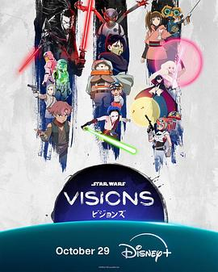

6.7
星球大战：幻境 第三季
Star Wars: Visions Season 3
2025
美国
评分 6.7
导演:
水野贵信 / 小林浩康 / 盐谷直义 / 山元隼一 / 橘正纪 / 垪和等 / 大冢雅彦 / 吉平直弘 / 大平晋也
演员:
类型:
冒险,奇幻
剧情简介
在一片辽阔星海之中，九个日本动画工作室联手打造了一系列短篇，将《Star Wars: A New Hope》以来的光剑、帝国、游侠及机器人世界，重新以极具风格化的视角呈现。新季自霓虹都市滑向废土星球，自黑暗帝国潜入义军抵抗，一名散兵、一个流浪公主、一位隐藏力量的孩子——他们在机甲喷火、光剑穿梭中，问自己：何为“力量”？何为“归属”？在第一集《The Duel: Payback》中，浪人骑士再次被迫拔剑，面对昔日已化为机械躯壳的师父；在《The Song of Four Wings》，雪地星球中，一位王族与机器飞翼并肩攻敌；末集《Black》让一名帝国风暴兵在败北边缘经历心灵深渊、梦境碎裂与光影交错。镜头在金属回响、霓虹眩晕、胶片颗粒中穿梭，观众像漂浮在宇宙裂隙中，既是旁观者，也是参与者。本季没有连贯的主线角色，而是每集都是一个完整世界——从黑白对决的武士风、儿童式冒险中心、到成人深沉的反思片段。动画语汇不再只是陪衬星战宇宙，而主动改写：机甲化 AT-AT 装甲内部竟变成日本城堡？光剑聚合如束束火焰？这是一场形式与主题的冒险。观众不仅看到耳熟能详的暴风兵、星际战舰，更看见“遗产”“家族”“叛逃”“重生”这些贯穿系列的核心被重新诠释。如果你以为只是“星球大战动画新篇”，那你就错了：它更像一场视觉与文化的交响，是老粉也惊叹、新观众也入迷的体验。